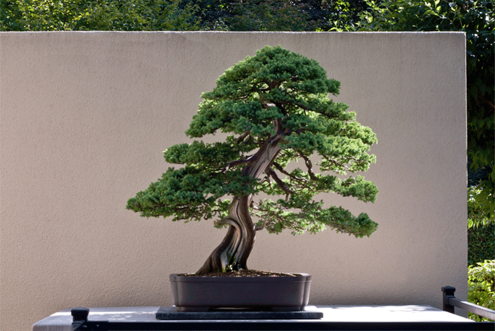

The Art of Bonsai
Bonsai is the art of growing certain trees and shrubs, of many varieties, in small, shallow containers. It is through careful and precise training and pruning, that the plant is slowly shaped and manipulated to give the appearance of an older, mature tree. The tree takes on a shape that is more in tune with how a tree would look growing out in nature. Training a growing tree or shrub into a desired shape over several years takes a calm patience, with every aspect being well thought out and every action precise and deliberate.
Meaning of Bonsai
The definition of the term "Bonsai" is a plant, usually a tree or shrub, that is grown in a container and made to look like a mature tree through the use of various training techniques. The plant usually does not exceed 1 meter in height. The art of Bonsai as we know it, traces back almost 2000 yrs.The word bonsai is made up of 2 Japanese characters or word phrases, "bon" & "sai", " Bon" is the pot , tray or container, the "sai" is the tree or potted planting. The word Bonsai equally applies to indoor and outdoor plants. The original word Bonsai comes from the Chinese word "P'en Tsai" it sounds similar to bonsai and has nearly the same meaning. It couldn't be further from the true spirit of bonsai if we restrict our interpretation in this way. It is indeed a tree in a pot, but a tree that has been subjected to a number of horticultural and aesthetic disciplines, through which visual harmony and botanical well being is achieved. The essence of classical Bonsai is to produce a healthy miniature representation of a tree.

Bonsai is about trees, trees grown in miniature. It is also about time and space and about life and attitudes. Historically, Bonsai was a part of the culture, an important part of family heritage. Equally, Bonsai can be simply a horticultural past time requiring no more than a measure of common garden sense, some artistic ability and plenty of patience.
Read more...